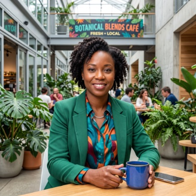
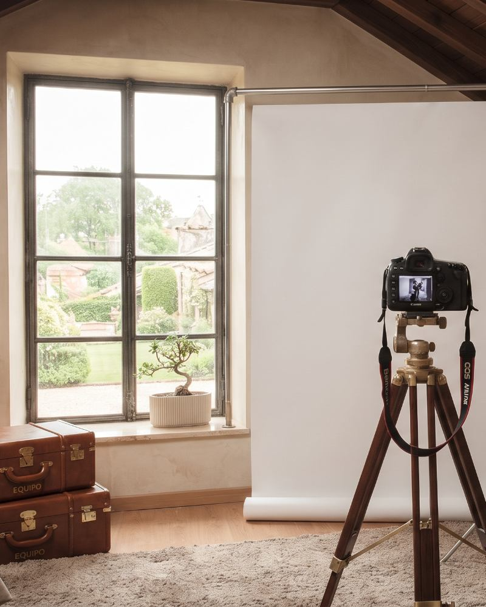
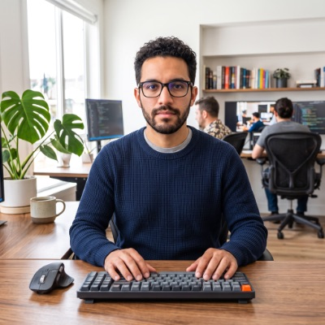
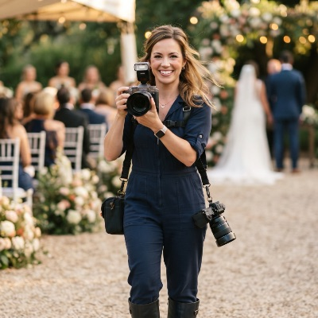
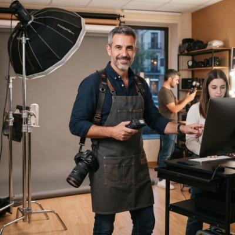

Mariana Sánchez
Fotografía de retrato
Doce años de trayectoria. Le interesa el retrato que no posa.
Un equipo de cuatro personas que trabaja en el mismo local desde 2014.
El estudio abrió en 2014 en un cuarto de servicio adaptado, con una sola ventana y un fondo de papel prestado. La primera sesión fue el retrato de una vecina que buscaba una foto para su currículum.
Hoy ocupamos un local de 120 metros cuadrados en Barrio Escalante, con dos salas de iluminación y un espacio de edición. Aquella ventana sigue siendo nuestra fuente de luz favorita.
Trabajamos con CCCR, con editoriales independientes y con personas que llegan por recomendación de otras.


Fotografía de retrato
Doce años de trayectoria. Le interesa el retrato que no posa.

Producto y catálogo
Viene del diseño industrial. Arma sus propios fondos y soportes.

Eventos
Cubre bodas desde 2016. Prefiere la fotografía documental.

Edición y color
Responsable del acabado final de todo lo que sale del estudio.